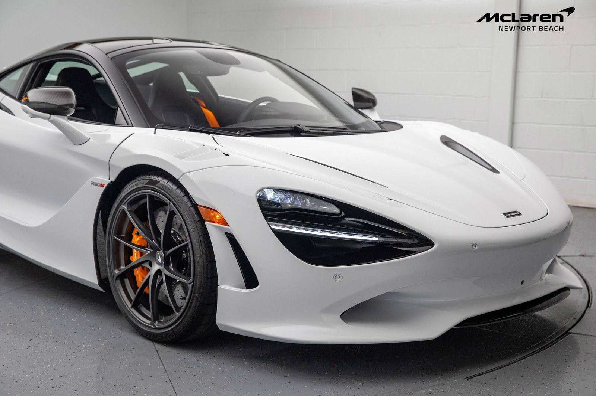
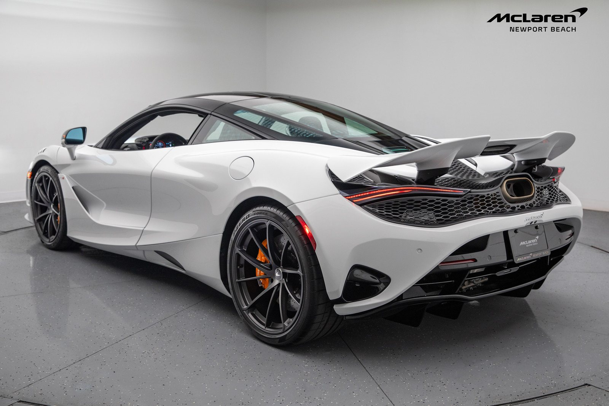
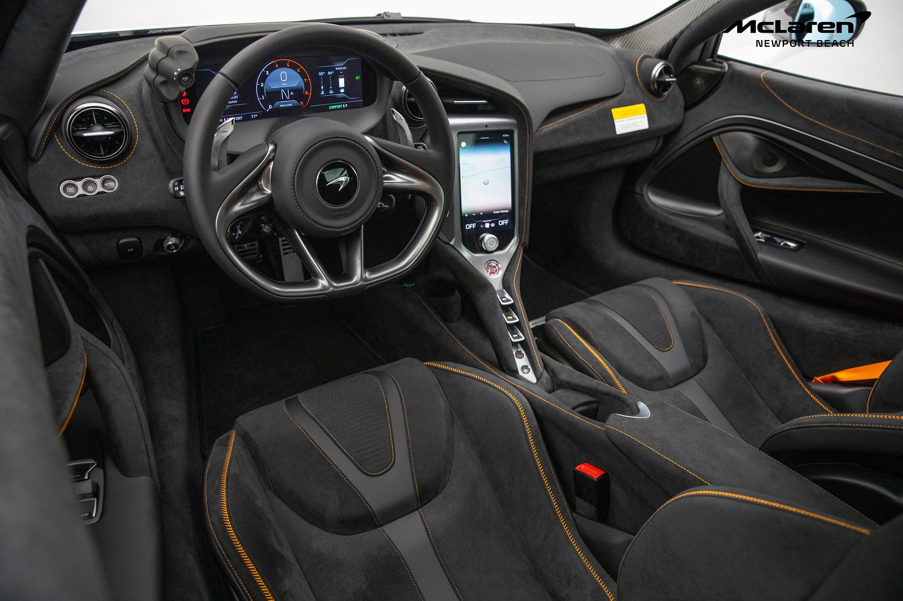
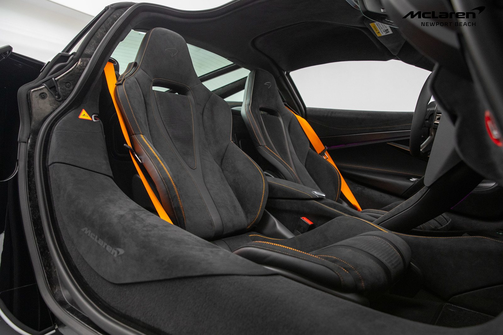
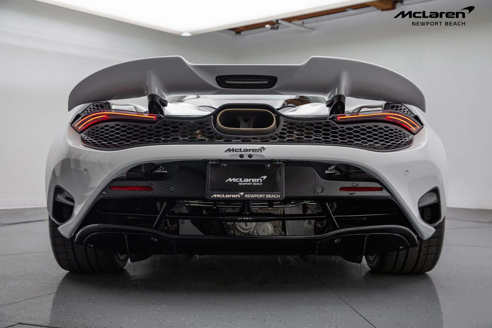

McLaren 750S

Описание
Спортивное купе с выразительным дизайном и двухместным салоном.
Характеристики
- Год выпуска: 2024
- Пробег: 4 000 км
- Кузов: купе
Цена: 39 000 000 ₽
Другие фотографии





Спортивное купе с выразительным дизайном и двухместным салоном.
Цена: 39 000 000 ₽



